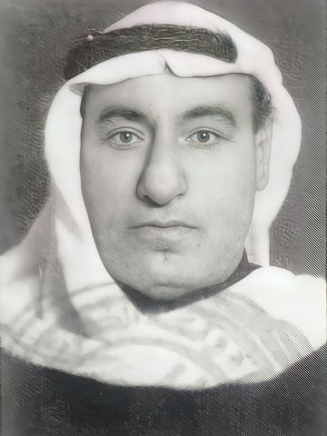

Yousef Abdulwahab Al-Qatami
Life in brief
Nakhuda Yousef bin Abdulwahab bin Abdulaziz Al-Qatami was trained by his brother Bader and commanded the family baghla Al-Badri after him. He went on to command the boom Al-Ghazal for Ahmed Al-Ghanim, then Al-Sulaimani and Al-Namisa, sailing as far as the Rufiji delta in 1949.
Life facts
- Died
- Date not yet recorded. Confirmed by the family (Noor Faisal Al-Qatami, 2026)
- Sea
- Nakhuda of the boom Al-Ghazal, owned by Ahmed Mohammed Al-Ghanim; Nakhuda Yacoub Khalaf Al-Yatama served under him as mu'allim (navigator) for two years (Dr Abdulmohsen Abdullah Al-Kharafi, Al-Othman: Madrasat Al-Safar Al-Shira'i fil-Kuwait, page 260)
Family
- Father
- Abdulwahab Abdulaziz Al-Qatami
- Mother
- Mariam Khalifa Al-Ghanim
- Spouse
- Wadha Abdullah Al-AbdulRazzaq